Префектура Тиба · Кудзюкури · стекло
Sghr Sugahara в Кудзюкури: стеклодувы, которые сами придумывают свои стаканы
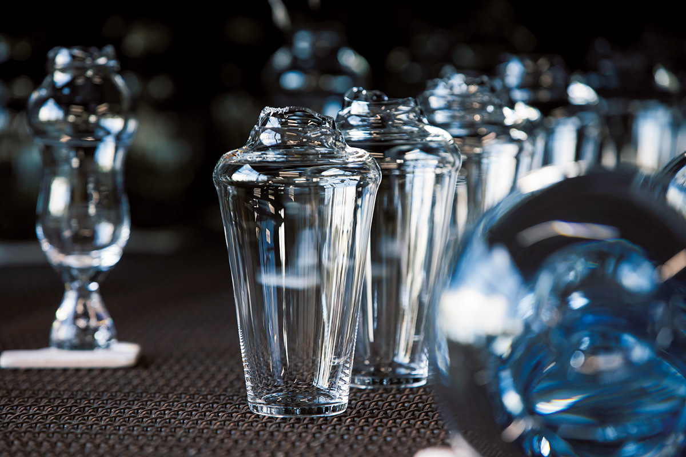
В городке Кудзюкури, на полуострове Босо в префектуре Тиба, работает стекольная мастерская Sghr Sugahara, основанная в 1932 году. Дизайнеров здесь нет: формы стаканов, бокалов и колокольчиков придумывают сами стеклодувы, а всё, что они делают, можно купить в заводском магазине рядом с цехом.
История
Из подрядчиков в бренд
Компания «Сугахара Когэй Гарасу», известная под брендом Sghr Sugahara, начиналась в старых кварталах Токио как маленький завод, который делал стекло по заказам оптовиков. Потом мастерская переехала в Кудзюкури, на побережье полуострова Босо, и большой перелом случился после нефтяного кризиса 1973 года. Цены росли, производители стекла сбивали друг другу расценки, а заказов становилось меньше. Тогда компания решила не работать больше на подряде, а самой придумывать, делать и продавать свои вещи.
В 1974 году стеклодувы собрали внутри компании «исследовательский кружок» и запустили собственный бренд. Первый большой успех пришёл быстро: креманки для кофейного желе, модного тогда десерта. Их нашли среди пробных вещей, которые мастера делали в свободное время, проверяя, на что способно стекло.
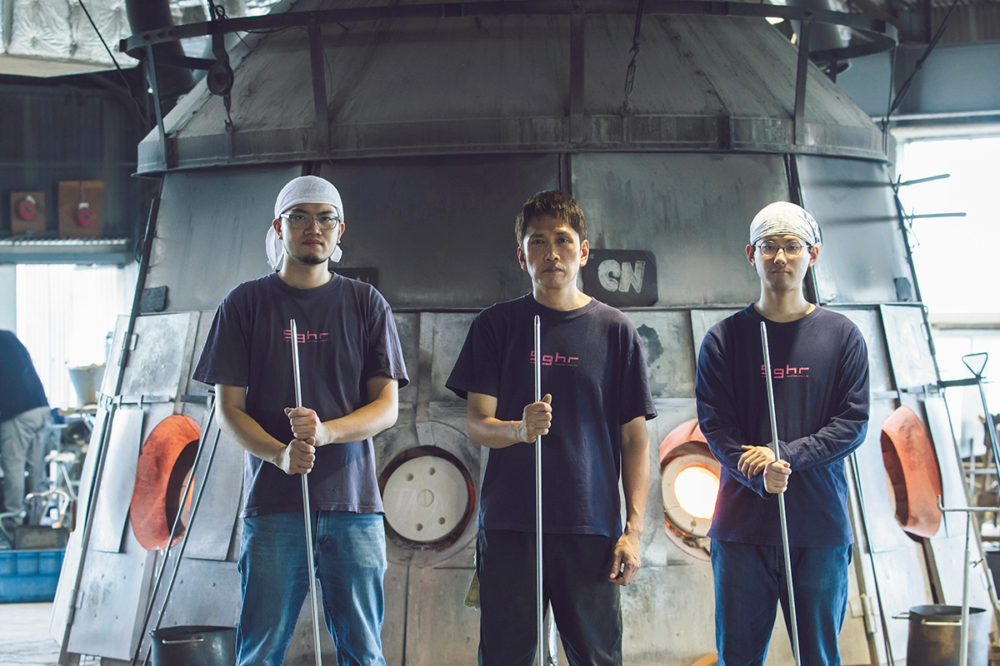
Мастерская
Где нет ни одного дизайнера
Самый известный предмет бренда это стакан FIFTY'S. Он тонкий, лёгкий, приятно касается губ, а название отсылает к простому модернизму 1950-х годов, который тогда покорил мир. Стакан такой гладкий и ровный, что покупатели постоянно спрашивают, где же здесь ручная работа.
«Сила Sghr Sugahara в разнообразии. Вещи получаются разными и интересными, потому что их делают очень разные люди»
стеклодув с 24-летним стажем (в 2021 году)
У печей и правда работают все: крепкие молодые парни, пожилые мастера, женщины ростом почти с трубку стеклодува. В 2026 году в мастерской было около 30 стеклодувов, из них примерно десять женщин. Они работают командами по 2–4 человека. Отдельного дизайнерского отдела не было и в 2026 году, хотя бренд давно известен. Бывают совместные проекты с дизайнерами со стороны, но формы придумывают те, кто лучше всех знает стекло: сами мастера. Они ищут то, что не нарисуешь на чертеже, а иногда превращают в находку даже брак, например пузырьки воздуха. Условие одно: вещью должно быть удобно пользоваться дома.
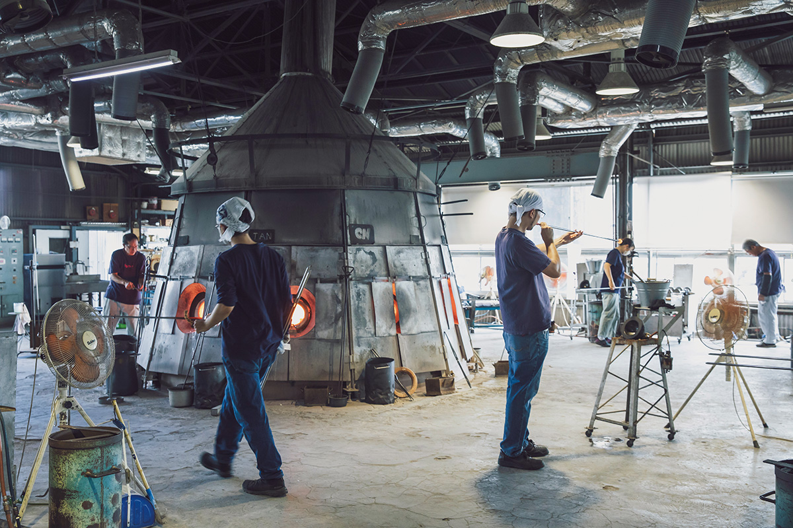
Компания поддерживает и собственное творчество мастеров. В заводском магазине при мастерской выставляют и продают авторские работы, которые стеклодувы делают в перерывах и выходные. Бывает, что такие опыты потом становятся новыми изделиями бренда.
«Стекло это природный материал, а работает с ним человек. Вещи кажутся одинаковыми, но немного отличаются друг от друга. Даже мастер, который занимается этим больше 50 лет, каждый день чему-то учится»
стеклодув Sghr Sugahara
Стекло нельзя потрогать руками
В тот день в 2021 году команда всё утро делала FIFTY'S. Один мастер набирал стекло из тигля, второй выдувал и формовал, третий отделял готовое изделие от трубки, и так раз за разом. После перерыва команда меняла форму и переходила к другому изделию. Чёткое разделение труда позволяет делать много одинаковых стаканов, но всё решает дыхание мастера, поэтому на результат влияют и то, как в этот день течёт стекло, и привычки каждого в команде.
«В отличие от дерева или металла, стекла нельзя коснуться рукой. Если стекло набирает крупный мужчина, а не женщина, дуть приходится совсем по-другому. Силу дыхания нужно подстраивать, а стекло остывает и застывает, так что раздумывать некогда. Всё решает опыт, хотя, может быть, я только делаю вид, что понимаю»
стеклодув, автор пивного бокала «Поуса»
Тот же мастер придумал пивной бокал «Поуса», который пользуется не меньшей любовью, чем FIFTY'S. Простой, мягкий по форме и с глубиной: в этом бокал, кажется, похож на своего автора.
Процесс
Как рождается стакан FIFTY'S
Стекло плавят при 1400 °C, а около 600 °C оно почти перестаёт двигаться. Раскалённое стекло течёт, как жидкая патока, поэтому сразу набрать на конец трубки нужное количество не получается. Сначала делают шарик размером с мячик для пинг-понга и поверх него набирают стекло ещё раз.
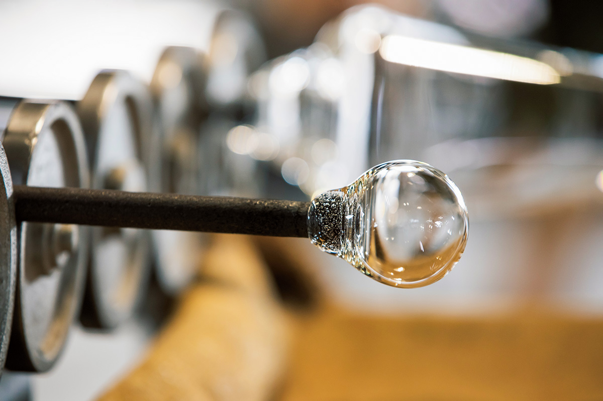
Дальше счёт идёт на секунды: стекло начинает твердеть. Мастер быстро опускает его в форму и выдувает стакан. Вязкость стекла каждый день немного другая, и стеклодув мгновенно оценивает, как течёт стекло и как его набрал напарник, и подстраивает силу дыхания.
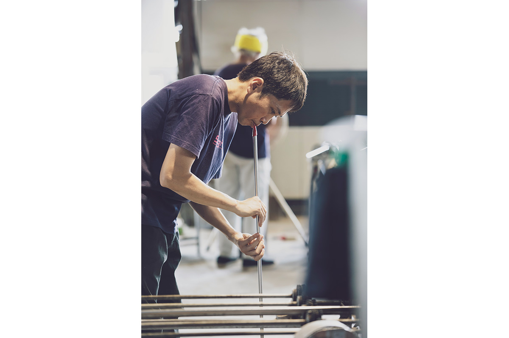
Чтобы отделить изделие от трубки, на место среза капают немного воды. От разницы температур стекло сжимается, и стакан отходит ровно, будто по надрезу. Затем его два с половиной часа медленно остужают в отжиговой печи.
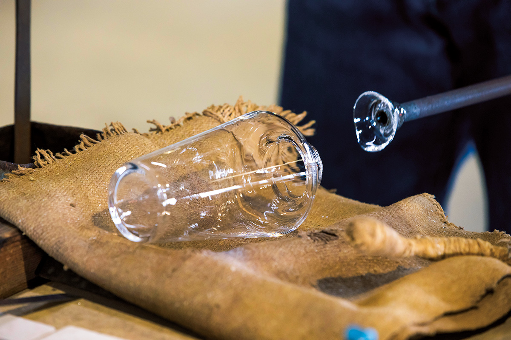
Лишнюю верхнюю часть срезают «огненной резкой»: стекло надрезают алмазом и бьют по нему жаром горелки. Край после этого острый, его выравнивают мокрой шлифовкой, снимают углы и подправляют внутреннюю сторону. Работа тяжёлая и мокрая, но, по словам мастеров, ничто не заменит ощущения голой руки.
Даже после шлифовки край остаётся шершавым. Его оплавляют горелкой, и только тогда кромка становится круглой и гладкой. Последний шаг: лазером на дне ставят логотип Sghr. Раньше клеили наклейку, но она отклеивалась, и лазерная гравировка стала ещё и знаком качества.
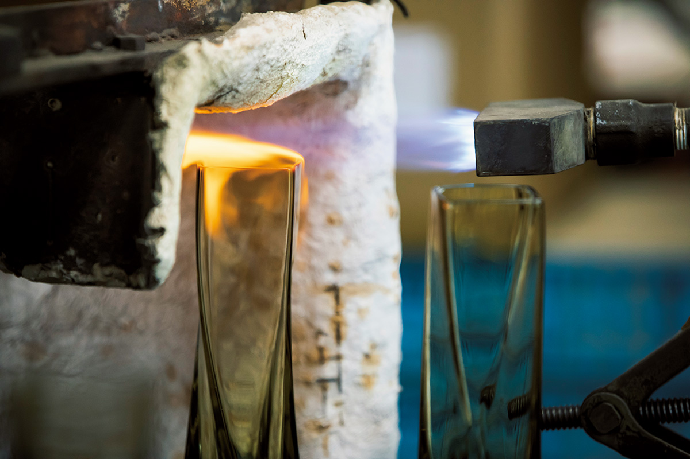
Всё делается вручную, но вес, диаметр и толщину дна держат в строгих размерах. Даже посмотрев весь процесс, трудно поверить, что такой стакан сделан руками. Прозрачный FIFTY'S появился в 1987 году; в 2021 году он стоил 1980 иен, при диаметре 85 мм, высоте 108 мм и объёме 380 мл.
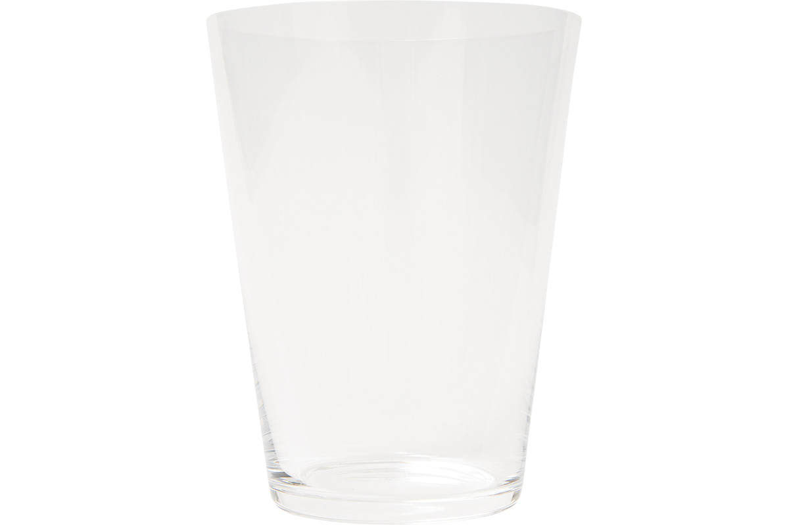
Фурин
Мыльный пузырь, который не лопается
Летом у Sghr Sugahara своя звезда: радужный колокольчик фурин. Его придумали вместе с промышленным дизайнером примерно в 2016 году, и с тех пор он каждое лето напоминает о сезоне. Стеклянный шарик, похожий на мыльный пузырь, переливается на солнце всеми цветами радуги и звенит лёгким сухим звоном.
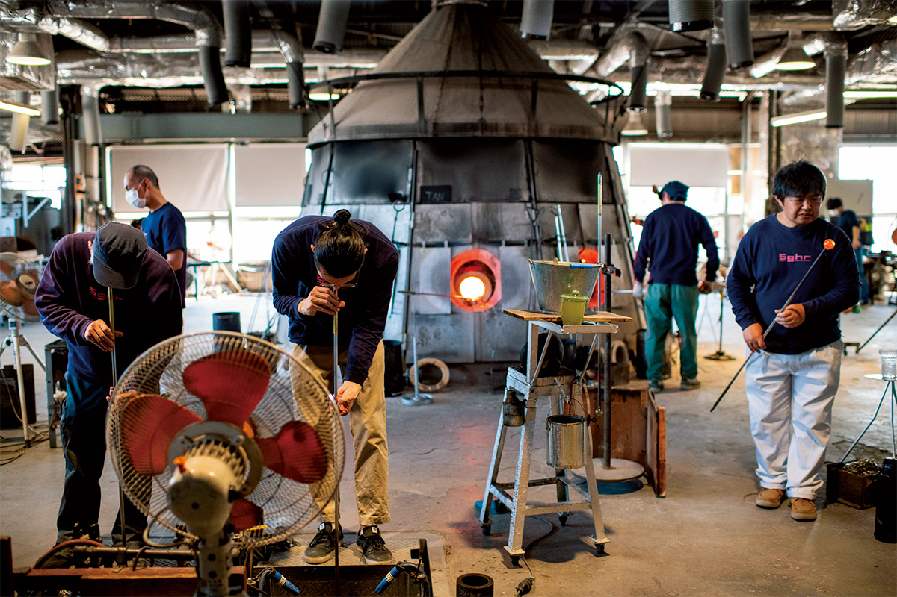
Набрать из печи каждый раз ровно одинаковое количество стекла невозможно, поэтому толщину выравнивают силой дыхания, а то, что выступает из формы, срезают. Радужный блеск мастера искали долго, перепробовали много способов и в итоге стали вжигать в стекло люстровую краску. Так и получился «мыльный пузырь, который не исчезает». Язычок внутри, который бьёт по стенкам, тоже стеклянный и тоже сделан вручную.
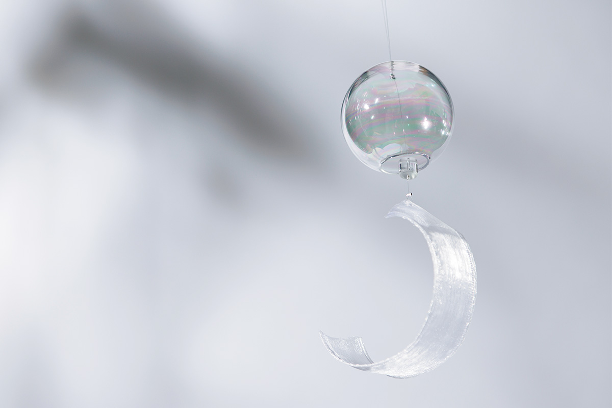
Маленький радужный фурин продаётся в коробке из павлонии, его часто берут в подарок. В 2026 году он стоил 7700 иен.
Магазин
Заводской магазин и мастер-класс
В 2026 году ассортимент Sghr Sugahara с вариантами цвета и размера превышал 3000 позиций, и каждый год добавляются новые. Компания ищет и способы не тратить материал впустую: обрезки разноцветного стекла, которые раньше выбрасывали, переплавляют вместе, и каждая такая вещь получает свой неповторимый цвет.
При мастерской работает заводской магазин. В 2021 году здесь было около 4000 видов изделий, от классики до новинок, вещи из переработанного стекла и отдельный уголок с авторскими работами мастеров в одном экземпляре.
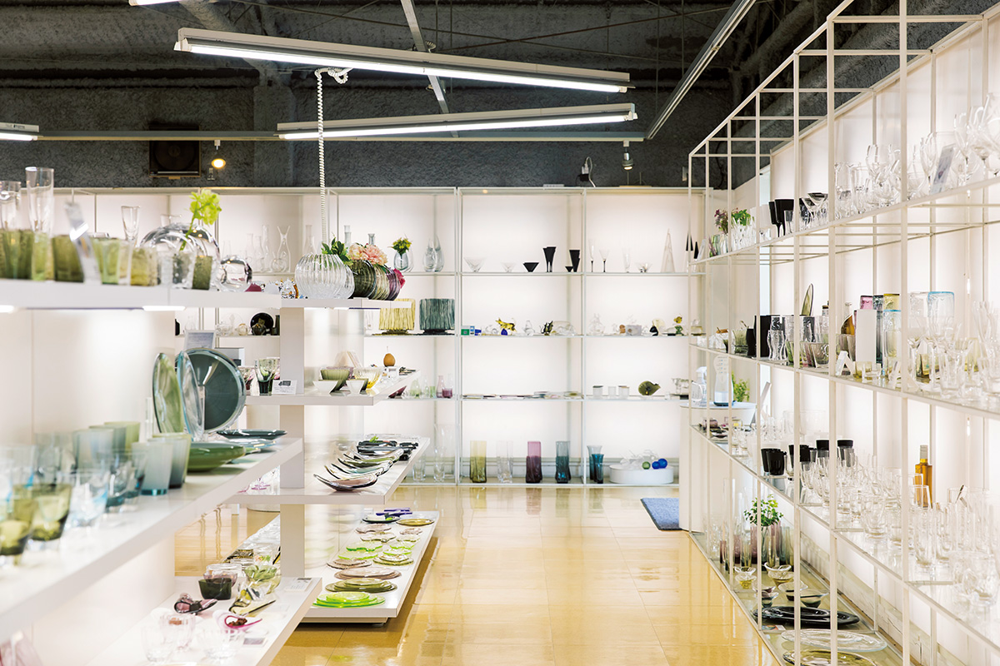
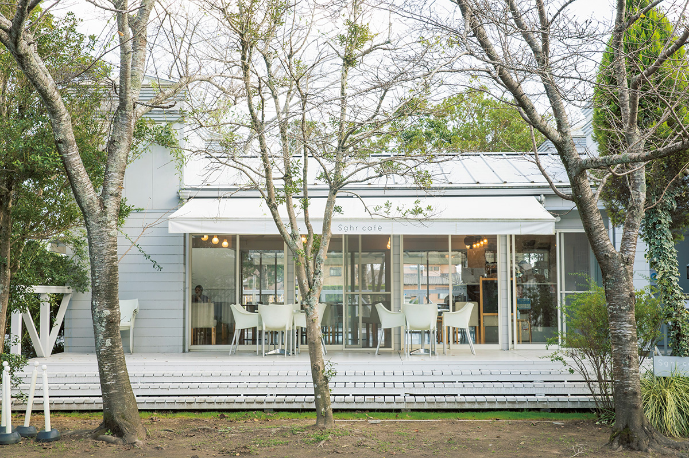
В 2021 году экскурсии по мастерской были приостановлены. На официальном сайте в 2026 году предлагали мастер-класс по стеклу с записью: «курс растягивания», где из раскалённого стекла делают тарелку, миску или вазу. По сайту, он проходит по субботам, воскресеньям и праздникам, а забрать остывшую вещь можно в тот же день ближе к вечеру. Рядом с магазином работает кафе Sghr café Kujukuri, где еду и напитки подают в посуде Sghr.
Sghr Sugahara, заводской магазин
- Адрес
- префектура Тиба, уезд Санбу, Кудзюкури, Фудзисита, 797
- Телефон
- +81 475-76-3551
- Часы работы
- 9:30–17:30
- Выходные
- без выходных
- Цены / Вход
- мастер-класс «курс растягивания» 3850 иен с налогом (официальный сайт, 2026 год), только по записи
- Как добраться
- от станции JR Тогане автобусом до остановки «Ниппон Пэйнто-маэ» (официальный сайт, 2026 год)
- Сайт
- sugahara.com
Фото: Юко Тиба, Юко Окосо.